( Status Report on the 13.7m Mm-Wave Telescope for The 2009-2010 Observing Season )
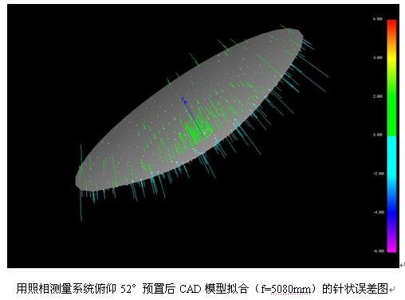
徐烨、左营喜、马俊梅、吴洁青、李阳、周强
贾元真、庞兴海、巨秉刚、孙继先、逯登荣、王敏
中国科学院紫金山天文台青海射电天文观测站德令哈毫米波观测基地
2009年12月
一，望远镜系统概况及夏季维护与更新改造情况
在2009年夏季（7 ？ 8月）维护更新季节，对望远镜机械传动系统进行了常规检修和维护。
对副面位置随俯仰的变化情况进行了详细测试，测试结果用于副面主动控制。用天文调焦的方法测试了望远镜焦距随温度、俯仰的变化情况，并将测试结果用于望远镜焦距的主动调节。
在8月10日基地陆续完成了夏季的各项维护（检修、更新）计划项目。从8月10日开始，基地对望远镜进行了为期一个多月的“综合性能的天文测试”工作，包括系统稳定性、指向跟踪、连续谱和谱线五点指向、方向图及天线效率测试、频谱仪定标、观测过程优化、天体谱线标准源的强度与视向速度、观测成图效率等。
以下简要报告维护、更新、测试等方面的主要工作和结果。
（1）用照相测量的方法成功实现天线主面面板预置技术 [1]。从1986年望远镜安装到迄今为止，13.7 m天线主副面的调测基准一直沿用天线生产方美国ESSCO公司的技术规范，即在天顶方向用经纬仪“硬”调至最佳抛物面面形。《13.7米毫米波望远镜2008-2009观测季节状态报告》中公布的用这种方法调测后天顶方向的加权精度为70 mm。，显然，这种调整虽然可以使天线在天顶方向的面形精度达到最优，但在实际观测方向并没有达到望远镜的最高效率。2008年开始，杨戟研究员在《关于进一步提高13.7米望远镜天线面精度的技术路线图》的报告中提出“照相测量技术对望远镜天线的测量方法”。该方法拟在新测量技术的基础上，以预置调整望远镜面板，以天线在俯仰52度时“获得最大的效率”为原则，来进一步提高13.7米望远镜的口面效率。实现这一目标可进一步提高望远镜的观测灵敏度，拓展河外弱源观测有重要意义。经准备，德令哈基地与有关单位合作，采用工业数字照相摄影测量系统以EL=52°为基准位置，对天线面板进行测量，并根据测量结果，进行面板预置调整。从7月1日—26日期间，利用照相测量技术第一次对望远镜天线面板进行了五轮的测量和面板预置调整。在EL=52°方向，面板(rms)误差从调整前的0.269 mm (=1/9.7l)降低到了0.097mm (1/26.8l)。2009年8月11日对VENUS进行了观测验证。结果表明，经过照相测量和预置调整，望远镜口面效率比上个观测季节提高了一倍[见图1.1.1]。由此，照相测量和面板预置调整技术在13.7米望远镜首次成功应用，同技术也是首次在国内射电望远镜上的成功应用
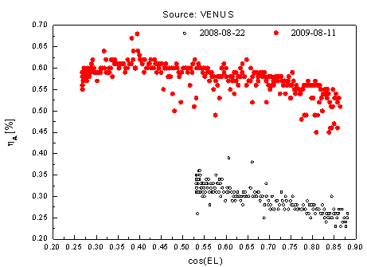
图1.1.1用照相测量技术进行俯仰52°预置前后望远镜口面效率比较。其中黑色空心圆圈表示未进行面板52°预置技术时得到的望远镜口面效率随俯仰的图示，数据取自2008年8月22日，红色实心圆点表示进行面板52°预置技术后得到的望远镜口面效率随俯仰的图示，数据取自2009年8月11日[2]。
（2）连续谱OTF观测模式的成功建立[3]。2008年10月16日到11月3日之间，观测基地对现在的伺服系统进行更新，新伺服系统由美国VertexRSI公司生产，采用独立的天线控制单元（ACU），使控制天线运转功能从现在的工控机（主控机）中分离出来，更新的天线伺服系统运行状态良好，达到预期性能。基于新的伺服系统，基地开发了OTF观测模式和相关软件。2009年6月进行了实验，成功实现了连续谱的OTF观测。测试结果表明，在当时望远镜的灵敏度下，OTF观测模式比通常的网格扫描（GRID）模式快3-4倍，且观测一遍的信噪比比GRID模式下高1.8倍。由此，OTF观测模式在德令哈13.7米望远镜上初步实现。
（3）望远镜观测流程的优化[4]。2009年3月份，对目前控制系统中的观测流程进行了优化，将目前对黑体单次积分时间30秒修改为5秒，通过测试发现这样的优化对谱线强度、速度、rms均没有影响，从本观测季节开始，对黑体积分时间只需要5秒钟，且当跟踪误差小于20角秒就对黑体和off点背景开始积分；在成图观测时，如果观测前后两个scan副面移动量小于0.03mm，后面scan就用前面scan的off点数据，这些优化使得观测效率提高了约25%。对源积分时跟踪误差限制由原来的7角秒改为5角秒，使得观测数据精度更高。
（4）望远镜调焦系统的优化[5]。德令哈13.7m望远镜工作在对毫米波透明的天线罩内，天线罩内没有温控措施，温度变形是影响高精度天线性能的关键因素,温度形变使得口面效率和指向精度随时间和观测位置而变化。这种变形会改变望远镜反射面的轴线和焦距、恶化反射面面形（相对于最佳拟合抛物面）的RMS 误差，从而使方向图产生畸变、天线增益和效率下降、指向精度变差。2008年5月建立望远镜焦距的温度自适应副面调焦系统，将该系统应用于天文课题观测后，望远镜效率得到了显著的提高。在今年夏季维护阶段，用照相测量系统建立了焦距随俯仰变化的规律，且将结果应用到望远镜调焦系统中，使得得到的数据rms更小。
（5）天线主、副面机械系统检修 [6]。继续通过合同方式，由南京中科天仪中心主持对天线的机械部分做了详细检修；对所有轴承、齿轮进行了清洗、加油。
（6）接收机系统夏季维护[7]。我们对接收机所有系统进行了检修、更换和更新。其中：①更换了制冷机、空冷压缩机风扇的轴承；②更换了SIS超导混频器及HEMT放大器，确保前端接收机各设备稳定、可靠运行；③调整AOS系统三个通道光路；④斩波轮调制系统驱动箱内干扰信号的排查和抑制；⑤合理设定IF系统各点的输出功率电平，使之达到最佳的功率匹配。
二，望远镜性能的简要说明
1.天线及表面精度
德令哈基地毫米波望远镜口径为13.7 m (45英尺) ，使用地平式机架。望远镜的光学系统是经典卡塞格林系统，接收机工作在卡焦上。经过面板调整后的主反射面的表面精度rms为97 mm [1]。
2.望远镜的跟踪
2008年10月更新了望远镜伺服系统，通过130分钟的测试表明，方位跟踪误差的rms为2.1″，俯仰跟踪误差的rms为0.9″，对绝大部分天区，天线的跟踪误差在1-3"左右，完全符合观测要求（根据望远镜的波束大小，观测时望远镜的跟踪误差允许范围也被限制在5"以内，以保证足够的跟踪精度）。图2.2.1为天线在AZ和EL两个方向的跟踪误差测试结果：
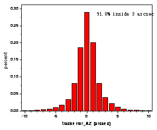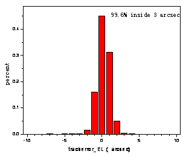
图2.2.1 方位和俯仰的跟踪误差统计分布图。方位91.0%在3角秒内，俯仰99.6%在3角秒内。数据取自参考资料[8]。
3.望远镜指向
采用“连续谱调制接收工作模式”对行星（金星、木星等）进行“五点指向观测”，还对行星状星云进行CO点源的谱线“五点指向观测”。通过2-3天时间，将观测取得的300-500组数据用指向修正模型进行拟合。从2006－2007观测季节开始，使用10个参数指向模型，新的指向模型在全天区域的适用性更好。图2.3.1是一个指向测试实例中指向源的空间覆盖。图2.3.2是指向修正模型计算出的南天区和北天区的残差分布。结果显示，该轮测试得到的望远镜南天指向误差(rms) 3.2″[9]，北天的指向误差 (rms) 为4.6″[9]。在综合测试过程中，“指向观测à模型拟合à修改验证”的过程要进行多轮。重复测试的结果都显示望远镜全天指向精度小于5″。
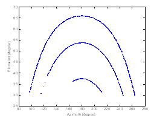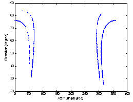
图2.3.1五点观测时南天IRC+10216、SATURN、VENUS [9]和北天NGC7027、21282+5050[9]有效数据点在天空中的分布。
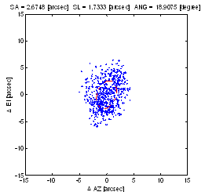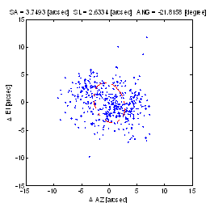
图2.3.2，模型拟合后得到的南天区方位残差和俯仰残差的 模型拟合后得到的北天区方位残差和俯仰残差的图示。
图示椭圆的长半轴为2.7″，短半轴为1.7″，方向角为18.9° 椭圆的长半轴为3.7″，短半轴为2.6″，方向角为-21.8°
数据取自参考资料[9] 数据取自参考资料[9]
在望远镜运行阶段，指向状况还可以通过观测CO谱线点源（例如IRC+10216等晚期恒星）或者具有明显局部空间分布特征的部分CO面源（如S140等）来不定期地加以验证。
作为常规测试项目，在观测季节内，每个月还要进行一轮指向测试与验证。
4. 望远镜的温标和效率参数（半功率波束宽度、方向图、月面效率、口面效率、波束效率）
在分子谱线观测中，本望远镜采用标准的斩波轮校准方法(Ulich & Haas 1976; ApJS, 30, 247及随后的文献)，给出的温标是改正了大气吸收及欧姆损耗以后的“天线温度”，也就是文献上的TA*。对于星际分子云展源，通常这个温标要进一步改正望远镜的主波束效率hmb，得到与同类望远镜可比的“观测辐射温度”TR*。这个温标代表望远镜的理想主波束与源空间亮温度分布的卷积。在我们的原始数据中不进行波束效率改正。观测者在进行银河系分子云等面源观测中，得到源的天线温度后，需根据望远镜相应观测季节所公布的波束效率，按照 的关系计算TR*。注意：这里假定了hmb不随俯仰变化。
半功率波束宽度(HPBW)反映了望远镜的分辨本领。对于口径为D、工作波长为l的天线而言，HPBW=kl/D，系数k与天线口面的照明函数有关。通过谱线五点观测的数据拟合得到在92.8GHz本振频率下，望远镜半功率波束宽度HPBW在方位方向为56±3角秒[11]，俯仰方向波束宽度为55±3角秒[11]。二维波束分布可以通过对天体的扫描加以测量。对金星扫描获得的二维扫描结果如图2.4.1。
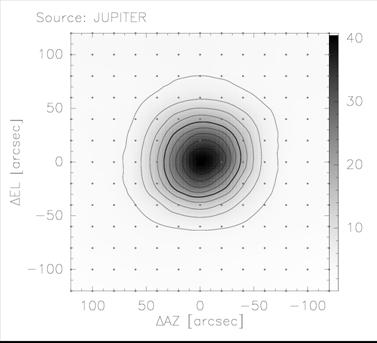
图2.4.1 望远镜二维方向图分布。对木星进行的OTF观测，REGRID步长20″。采用绝对强度校准，数据用天线温度表示。数据取自参考资料[10]。
月面效率, hMOON, 是用来衡量望远镜对于“宽面源”的波束效率。在望远镜指向工作完成之后，对月面进行一维扫描，在考虑月相的修正以后，得到月面效率平均值为66.8±0.5% [11]，见图2.4.2。
月面效率比采用行星测量得到的主波束效率要高，因为前者包含了主波束以外的部分“前向 (forward)” 旁瓣成份。在实际观测中，目标天体（分子云）的尺度通常大于望远镜的波束宽度，这时望远镜的波束效率相对地接近月面效率。但是这种接近往往并不是观测者需要的，因为旁瓣接收了来自观测方向以外的辐射。因此，对面源观测的射电望远镜，往往需要更低的旁瓣。望远镜旁瓣越低，用行星测量得到的“主波束效率”越接近“月面效率”。
图2.4.2对月面一维扫描得到的强度分布。测量时接收机的本振频率设置为112 .6GHz，扫描范围±1800″, 步长30″。观测时月相为-352.178°左右，月面亮温度326.3 K。数据取自参考资料[11]。
对于主要从事星际分子云等面源观测的望远镜而言，波束效率是一个重要的效率指标。测量望远镜主波束效率最恰当的方式是寻找一个与望远镜波束尺寸一致的天体来进行。但是，实际中并没有这样的天体（或人造）目标存在。因此，测量望远镜主波束效率是分别通过对月面、行星、谱线面源、谱线点源等目标的测量来进行。随着前置黑体装置的正常工作，在进行五点指向观测的同时，将观测结果校准为温度，同时可以得到望远镜的波束宽度，通过计算便得到望远镜的口面效率和主波束效率。
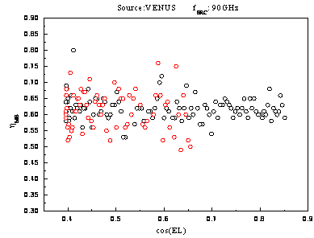
图2.4.3 望远镜主波束效率与俯仰余弦的图示。数据取自参考资料[12]。
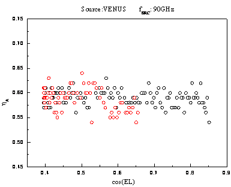
图2.4.4 望远镜口面效率与俯仰余弦的图示。数据取自参考资料[12]。
通过本次观测得到望远镜主波束效率为62%，口面效率为59%[12]；
望远镜作为一个整体，对天体谱线标准源进行观测的数据精度通常用来反映天文观测能够达到的实际测量精度。在运行过程中，用该精度作为衡量整个望远镜仪器性能、工作状态、观测方法、以及数据归算处理等全过程的依据。
由于天线面板的重力形变与光学耦合变化，观测得到的天线温度随俯仰有一定的依赖关系。在“综合性能的天文测试”阶段，对谱线面源S140、NGC 2264进行了中心点全天观测，得到谱线峰值强度与俯仰的关系（见图2.4.5和2.4.6）。
图2.4.5北天谱线标准源S140 12CO、13CO峰值强度随俯仰余弦的图示。数据取自2009年9月1日[13]。
图2.4.6南天谱线标准源NGC 2264 12CO、13CO峰值强度随俯仰余弦的图示。数据取自2009年9月4日[13]。
从图2.4.5和图2.4.6可以看到，目前得到的北天谱线标准源S140和南天谱线标准源NGC 2264 12CO（1-0）的峰值强度与俯仰还有一定的依赖关系，而13CO（1-0）的峰值强度与俯仰的依赖关系不明显， 请课题观测人员注意校准。通过对NGC2264 12CO(1-0)峰值强度与俯仰余弦图示的线性拟合，然后校正了这一变化后，南天谱线标准源NGC 2264的12CO(1-0)峰值强度的数据起伏（rms代表了最终可以得到的数据精度）降低到0.38 K，天线温度测量的相对精度达到2.4%。
基地建议观测者在进行课题观测的过程中适当选取待测目标源附近的谱线标准源定期（每1-2小时）地加以观测，或者利用待测源的某一特定位置（例如，中心点）作为相对标准，观测过程中在不同EL方向多次加以观测，建立对应的俯仰效率关系f(EL)。在此基础上，根据以下关系进行效率修正：
（1）
其中hmb是天顶方向的望远镜主波束效率。
5.接收机的参数[3]（频率工作范围、噪声温度、稳定性）
13.7米望远镜目前使用一台3 mm波段的SIS超导接收机。按照标准的波段设置要求，该波段的接收机工作频率范围在85-115 GHz。使用中的接收机本观测季节在f(LO)= 85-115 GHz波段范围内接收机的噪声温度Trx的实测值为75-145 K(DSB)[14]，而包含了地球大气噪声、圆堡等辐射贡献在内的“系统温度”Tsys的测量值分布在图2.5.1中显示。这些系统温度的数据有助于观测者估计项目所需要的观测积分时间和灵敏度。
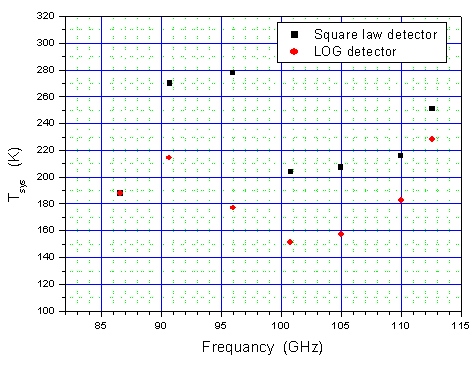
图2.5.1. 系统温度随接收机本振频率的分布。横坐标是接收机的工作频率， 纵坐标是双边带工作方式下测量的系统温度Tsys[DSB] (K)，红色圆点为对数检波器输出，黑色方框为平方律检波器输出。它包含了接收机、天线与光学系统、圆顶和蒙皮、以及地球大气的贡献。本图的系统温度随工作频率的分布可用估计观测的积分时间。在冬季的相当时间范围内，由于气温普遍低于测试时间（10月份），因此，预计的系统温度值应当略低于本图的分布。数据取自参考资料[15]。
本观测季节，望远镜可以从事85-115 GHz整个波段内的观测。多次重复测量结果表明，当SIS工作在第一台阶时，20分钟内系统相对稳定性DG/G＜ 4′10-3。图2.5.2显示了接收机在工作波段内的相对稳定性的典型测量结果。
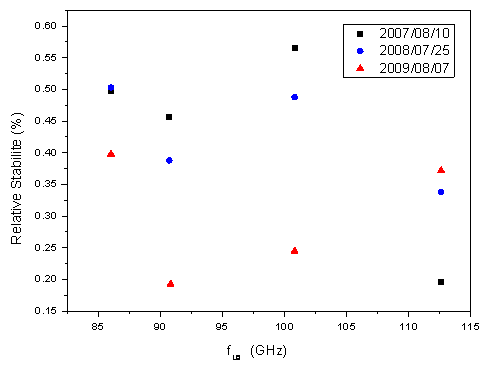
图2.5.2. 接收机中频总功率输出的相对稳定性随前端本振频率的分布。横坐标表示本振的工作频率，纵坐标表示每单位小时的总功率的相对起伏，用以度量接收机增益的相对稳定性。测量时间是2009年8月，上图中用“红色三角”表示。为了比较，上图中也将2007、2008年的相对稳定性用“黑色方块”、“蓝色圆点”表示。从图上可以看到，本季节在整个85-115 GHz频段内的接收机稳定性（红色数据点）都达到＜ 4′10-3/hr的水平。数据取自参考资料[16]。
6.后端频谱仪的主要技术参数[17]（带宽、通道数、分辨率、稳定性）
6.1 后段频谱仪AOS技术参数
从2002-2003观测季节开始，基地使用“3毫米波段多谱线系统”作为主要的接收后端。该系统是由科学院“九？五重大项目”支持并由毫米波技术实验室主持、基地参与研制。“3毫米波段多谱线系统”主要由宽带4路中频和3个AOS后端频谱仪组成，它同时可以接收在3毫米波段对天体物理重要的12CO(J=1-0)、13CO(J=1-0)、C18O(J=1-0)等3条星际分子谱线。多谱线系统中频信号的中心频率为2.64 GHz、带宽为800 MHz。当本振频率设置在F(LO)=112.6 GHz时，同一个SIS超导接收机以上/下边带折叠方式同时接收12CO(J=1-0)、13CO(J=1-0)、C18O(J=1-0)等3条谱线，在第一本振频率跟踪的基础上，通过中频系统加以二次视向速度修正，多谱勒频率跟踪精度达到50 kHz（等价于0.1 km/s）。谱线中频信号处理由原来的1路更新为4路。对其中的3路，分别用1个带宽为145 MHz和2个带宽为43 MHz的3个新AOS频谱仪加以接收，使系统同时获得3×1024通道的谱线信息，中频的第4路作为总功率接收。经过测试，包含实际大气变化在内的系统整体Allan方差时标＞100秒。数据采集系统采用了FPGA编程的AOS实时控制和数据采集系统，提供Quicklook界面和工业标准的IE488接口，操作使用方便。该系统在实现上、下边带3条谱线同时接收的基础上，也保留了观测单条谱线的功能，并且对频谱仪的选择提供了灵活性。
表2.6.1列出了这3个AOS后端的基本参数。望远镜实际运行中，仪器随工作环境的微小变化（例如温度变化）会导致表2.6.1中的参数也发生微小变化。观测基地会经常性地进行频率定标测试。在每次常规测试以后，最新的准确数值将在观测数据FITS文件中及时更新，以便保证数据中反映的参数是最新的。
表2.6.1望远镜频谱后端AOS的基本参数 [17]
|
后端名称 |
带宽（MHz) |
中心频率(MHz) |
通道数 |
通道频率
间隔 (KHz) |
通道频率
分辨率 (KHz) |
|
AOS-I（13CO）
（110.201353 GHz） |
42.757 |
70.0368 |
1024 |
41.75 |
81.3±5.1 |
|
AOS-II（C18O）
(109.782183 GHz) |
43.153 |
70.0388 |
1024 |
42.11 |
77.3±3.8 |
|
AOS-III（12CO）
(115.271204 GHz) |
145.363 |
225.187 |
1024 |
141.19 |
209.0±4.4 |
通道速度间隔＝光速×通道频率间隔÷静止频率
基于3条谱线的同时接收，“多谱线系统”使信号接收速率直接提高了3倍，显著加强了望远镜的观测能力。利用“同时观测”的原理，多谱线系统在提高接收机稳定性的基础上，在很大程度上消除了毫米波段大气快速变化所带来的对信号强度的影响，提高了测量精度。与以往的系统相比，“多谱线同时观测”也提供了对观测流程的优化，使望远镜的成图观测效率提高2-3倍，其效果同样也增加望远镜的数据产出率。结合多谱线系统，望远镜的另一个显著的改善是引入实时斩波轮校准方法，使原始谱线的基线变得平整，这些谱线通常经过线性基线拟合以后就能够获得精确的谱线信息，使定标精度优于5%, 并使数据有效率提高1-2倍。图2.6.1示意的是三条谱线同时观测得到的原始谱线数据。
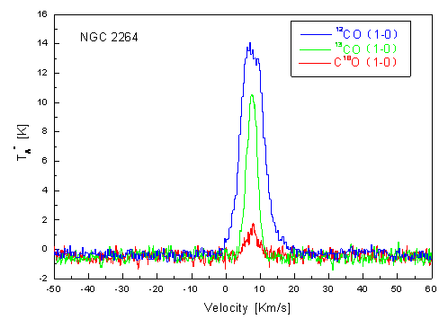
图2.6.1 “3毫米波段多谱线系统”一次（例）观测直接输出的NGC2264的12CO(J=1-0)、13CO(J=1-0)、 C18O(J=1-0)三条原始谱数据。横坐标是视向速度，纵坐标是天线温度。蓝线代表12CO(J=1-0)谱，绿色线是13CO(J=1-0)谱，红色线是C18O(J=1-0)谱。观测的“在源积分时间”为60sec，EL=53°，系统温度Tsys=316 K。数据未经过基线拟合, 从该图中可以看到，噪声水平与系统温度相对应，谱线的基线足够平整。
根据星际分子谱线的特定频率位置，观测者也可以在接收机工作波段的任何别的本振频率下选择这3个后端中的1至3个频谱仪来工作，并且可以根据大气变化情况和接收机工作状态选择最佳的本振工作频率和边带。观测CO以外谱线时，观测课题明确了观测频率的需求以后，观测者可以利用“谱线观测频率计算软件（AOSfreqset）”（在基地网页上下载）合理选取AOS，以便同时观测多条谱线，也可以向基地为该开放观测研究项目指定的观测助手咨询仪器设置和选项的具体方案。
6.2 高分辨数字频谱仪FFTS技术参数
该频谱仪的带宽为1000 MHz、500 MHz、250 MHz、200 MHz(可选)，每个带宽的通道数均为16384个。2007年4月，频谱仪在13.7米望远镜上进行了实验观测并取得了成功。结果表明，该数字频谱仪在带宽、频谱分辨本领、动态范围、稳定性等关键技术指标上都有新的突破。这种频谱仪对河外星系的谱线接收、高分辨谱线观测以及深度积分的谱线观测等极限观测项目显示出新的使用潜力。经过测试，在不同的频谱仪带宽下，包含实际大气变化在内的系统整体Allan方差时标>100秒[13]。FFTS也可以同时观测多条谱线，观测者可以利用“谱线观测频率计算软件（FFTSfreqset）”（在基地网页上下载）查看。该频谱仪已经投入了实际的天文观测。有兴趣使用该频谱仪的研究人员可以使用该频谱仪进行谱线观测。
表2.6.2望远镜频谱后端FFTS的基本参数
|
工作带宽 |
通道频率间隔理论值 |
通道频率间隔测试值 |
备注 |
|
200 MHz |
12.2 kHz |
12.2 kHz |
基带变换1000 MHz |
|
250 MHz |
15.3 kHz |
15.3 kHz |
|
1000 MHz |
61.0 kHz |
61.0 kHz |
|
500 MHz |
30.5 kHz |
30.5 kHz |
基带变换500 MHz |
1.观测模式
·在接收机工作频率范围内，望远镜以双边带下的位置开关模式进行谱线观测，单点观测或者成图观测。
·可以使用“多谱线系统”同时观测CO及其同位素的谱线。
·谱线观测采用标准的斩波轮方法定标。
·可以进行3 mm波段大气不透明度的测量。
·可进行波束调制方式下的3 mm波段连续谱单点和成图观测。
2.成图(Mapping)的时间效率
成图观测(Mapping)是常用的面源观测方式，望远镜通过单一波束在空间的逐点扫描来覆盖一定的天区范围，获得三维(X-Y-Velocity)图象。除了系统温度决定的灵敏度或积分时间以外，观测过程中的天线跟踪移动、斩波轮开关、数据I/O等操作也导致一部分时间损耗。经过测试，目前Mapping模式下该时间效率因子为2.5。观测者在课题所需观测时间的计算中应将对源的时间总和乘以该因子，作为估算项目总时间需求的依据。
3.资料格式
控制系统输出数据为国际通用的标准FITS格式。头部信息中的关键字符合GILDAS/CLASS处理软件[注]的需要。用户可以使用GILDAS/CLASS等一些通用的射电谱线数据处理软件来进行处理。
[注]：GILDAS/CLASS是由法国Grenoble天文台与IRAM合作开发的射电天文数据处理软件。
三，开放观测课题的申请和日程安排
2008-2009观测季节，基地共完成了21件开放课题的观测[18]，包括俄罗斯、日本等国家和地区的课题。
2009-2010观测季节13.7米毫米波望远镜的对外开放观测服务从2009年9月26日起开始。该观测季节预计将在2010年6月结束。观测季节内望远镜24小时连续运行。2010年春节按照国家法定休假时间表望远镜暂停运行。2009-2010观测季节的基本时间安排如下：
2009.08-12 使用“3mm波段多谱线”系统的课题；
2010.01-03 使用“3mm波段多谱线”系统的课题；
2010.03-06 使用其它频率和观测模式的课题。
德令哈观测基地根据上述整体时间安排为对所接受的观测课题申请安排具体的观测时间并在项目观测的前2-4周通知项目PI。对每一项接受课题，基地将以正常的仪器状态积极协助天文学家完成观测。基地为每一个观测课题配备天文观测助手。通知观测课题的同时也为每个观测项目指派天文观测助手。部分观测课题有特殊需要时，基地也接受委托观测。尽管如此，基地还是强烈建议：观测者（尤其是还不足够熟悉毫米波望远镜观测的研究人员及学生）能来基地参加观测，在了解毫米波射电天文观测的一般过程的同时，也有机会熟悉13.7米毫米望远镜的特点，把握观测数据的质量。
德令哈毫米波观测基地热情邀请国内外专家使用该望远镜从事天文和相关科学的观测研究。13.7米望远镜常年接受观测课题申请。所有观测申请均由proposal@mail.pmodlh.ac.cn加以受理。观测申请的格式文本可以从基地网页下载。申请的观测课题或者时间要求在出现竞争的情况下将完全经由“毫米波评议会”的专家根据申请项目的科学意义和项目可行性进行打分评议，确定优先级。毫米波评议会的专家目前由南京大学、北京大学、北京师范大学、上海天文台、以及国家天文台的同行专家组成，今后还将聘请一些海外同行专家担任“毫米波评议会”专家。
德令哈基地13.7米毫米波望远镜最新状态信息将及时公布在基地网页：http://www.pmodlh.ac.cn 上。
四，近几个观测季节内望远镜从事的观测课题举例
1.银河系分子云物理结构的探测；
2.年轻星的高速气体外流和动力学；
3.星际化学；
4.银河系恒星形成区内分子气体的分布；
5.银河系动力学；
6.超新星遗迹与星际介质相互作用、宇宙射线源；
7.恒星演化和晚型恒星的分子气体观测；
8.太阳系天体的分子谱线观测；
9.月球的毫米波辐射性质的观测研究；
10.地球大气的毫米波电波传播和辐射物理性质的观测研究；
五，使用望远镜进行观测
1. 观测准备
观测者从科学目标出发，准备观测源的基本信息，包括目标源的坐标、速度、尺度、参考背景(reference)的坐标、所需要的探测极限和积分时间估计等。由于毫米波段大气辐射在EL方向的梯度显著，这种梯度制约了谱线观测的基线平整度。因此我们特别提醒，参考背景坐标的选取应尽量限制在距离目标源1°的范围内，以保证谱线基线有足够的平整度。
从2005-2007观测季节开始，为了在CO三条谱线观测之外的频率上方便地选择接收机工作频率，编制了《AOSfreqset》软件；从2007-2008观测季节开始，高分辨数字频谱仪投入开放观测，基地编制了《FFTSfreqset》软件，观测者可在基地相关网页下载这两个程序来制定自己的观测计划。使用该程序有困难者也可以到基地以后再设计观测频率设置情况。
从2002-2003观测季节开始，基地提供成图观测的Tcl/Tk制表程序dtg.tcl。从2006-2007观测季节开始，该制表程序提供银道坐标成图。该程序有参考背景坐标查找功能，观测者可以利用该程序查找参考背景坐标，可在基地相关网页下载该程序来制表。使用该制表程序有困难者也可以到基地以后再行制表。
基地指派的天文观测助手将协助观测者进行必要的观测准备，包括介绍设备情况、提供仪器选项的咨询、协助制表、协助观测日程和步骤的制订、协助观测和数据处理、提供数据备份、与用户保持观测后的必要联系等。
2.观测
望远镜值班操作人员负责进行望远镜和相关仪器的操作，根据要求进行观测。他们根据工作日程的安排进行观测，及时向课题观测研究人员反映仪器的状态，直到完成观测。
在观测过程中，项目观测研究人员及基地指派的观测助手对获得的数据内容和质量进行核查，及时对操作提出要求。必要时，值班操作人员可根据仪器状况建议观测者调整观测内容。
基地备有《望远镜观测手册》，以方便来基地的课题观测研究人员了解和核实操作员的操作内容。基地今后将不定期地举办讲习班和观测操作培训。经过观测操作培训的外单位工作人员和研究生有可能获得授权在他们的观测项目执行过程中操作望远镜。
3.数据处理、数据备份
基地为观测研究人员准备了优质、可靠、实用方便的数据处理操作平台，以SUN BLADE 2000、PC为硬件平台，操作系统有LINUX、WINDOWS， GILDAS/CLASS作为基地处理毫米波谱线数据的标准软件。观测数据可在基地即时处理。基地指派的天文观测助手将协助观测者熟悉数据处理的操作。
基地指派的天文观测助手将负责为观测者备份光盘数据。观测者也可以通过基地网络将数据传送回自己的研究所。基地将为所有观测项目备份其原始数据。根据国际惯例，课题观测的所有数据将由课题申请者独占使用一年后成为开放共享数据。跨年度的长期项目在观测结束日起满一整年以后成为开放共享数据。
4.交通与生活服务
基地将为所有观测人员做好迎送接待、食宿、交通、网络通讯、应急供氧等支撑工作。经过2003年夏季对办公及招待所的装修，基地的工作和住宿环境得到了明显改善。前来基地从事观测课题研究的人员食宿交通等费用自理。由于地处西部，交通不便,我们推荐前来基地观测的研究人员事先计划安排好车（机）票。目前，当地铁路部门尚未将由德令哈往返附近中转城市的车票纳入全国铁路车票预订网络，车票在当地订购。为此，在基地网页上我们公布有基地在西宁的接待号码，该接待处协助购买从西宁至德令哈的车票。从兰州中转时，也可以根据网页上提供的电话号码与基地协议单位联系订票。从基地返回到上述两个中转城市的车票均由基地帮助解决。
基地负责德令哈市当地的接送站。到达基地前，请与基地办公室马俊梅女士联系接站时间和具体要求，电话(0977)8224969。
德令哈基地地处青藏高原，干燥缺氧，冬季气候寒冷。基地提醒前来工作的天文学家携带足够的御寒衣物，做好充分的适应准备。
六，意见建议、或进一步的联系咨询
本报告涉及的更新改造项目和综合性能的天文测试内容是德令哈毫米波观测基地全体工作人员及其与毫米波-亚毫米波技术实验室、南京中科天仪中心、恒星形成团组等单位的技术人员和天文学研究人员共同努力完成的。需要了解基地望远镜更多内容、提出意见（包括对本报告的质疑）或建议时，请与基地徐烨研究员联系： xuye@mail.pmo.ac.cn。对本报告有关内容的质询或批评也请发给上述地址。观测项目实施以后，欢迎研究人员对观测中的天文和技术问题以及各种观测服务工作出现的问题等提出意见和建议。在基地网页上也公布有基地全部工作人员的Email地址。
七、参考资料和测试报告
[1]左营喜、李阳、孙继先、杨戟、李晶晶、徐烨、何登云，2009.8.6，《13.7米望远镜照相测量面板调整报告v1.0》，德令哈毫米波观测基地；
[2]巨秉刚、孙继先、逯登荣，2009.8.11，《照相测量前后望远镜效率测试结果比较（2009-08-11）V1.0》，德令哈毫米波观测基地；
[3]逯登荣、徐烨、杨戟、杜甫君、孙继先，2009.6.22，《连续谱OTF测试结果V1.0》，德令哈毫米波观测基地；
[4]杜福君、孙继先、逯登荣、巨秉刚，2009.3，《黑体优化系列报告》，德令哈毫米波观测基地；
[5]左营喜、孙继先，2009.8,《2009纵向调焦结果v1.1》，德令哈毫米波观测基地；
[6]李阳、孙继先等，2009.7，《2009年望远镜机械维修通报》，德令哈毫米波观测基地；
[7]左营喜、吴洁青、马俊梅、贾元真、庞兴海、周强、刘其利，2009.8.，《接收机系统系列测试报告》，德令哈毫米波观测基地；
[8]孙继先，2009.10.17，《跟踪误差测试报告（20091017）》，德令哈毫米波观测基地；
[9]巨秉刚，2009.11.24，《五点指向观测报告(2009-11-24)v1.1》，德令哈毫米波观测基地；
[10]逯登荣、孙继先、左营喜，2009.8.13《方向图扫描快报（2009-08-13）》, 德令哈毫米波观测基地；
[11]孙继先、吴洁青、郭加楼，2009.9.5，《月面效率测试报告（2009-09-5）》，德令哈毫米波观测基地；
[12]巨秉刚、孙继先、逯登荣，2009.9.16，《望远镜效率测试报告（2009-09-16）V1.0》，德令哈毫米波观测基地；
[13]巨秉刚、孙继先、逯登荣、王敏，2009.9，《标准源观测系列报告》，德令哈毫米波观测基地；
[14]贾元真、吴洁青、逯登荣、左营喜，2009.7.25，《接收机噪声温度（TRX）测试》，德令哈毫米波观测基地；
[15]吴洁青、贾元真、刘其利、何登云，20009.10.14，《接收机系统噪声温度测试》，德令哈毫米波观测基地；
[16]吴洁青、贾元真，2008.8.14，《历年接收机相对稳定性测试比较(2009-10-09)》，德令哈毫米波观测基地；
[17]周强 刘其利 孙继先，2009.7.30，《2009后端AOS频谱仪维护检测报告》，德令哈毫米波观测基地；
[18]巨秉刚，2009.6.30，《2008－2009观测季节望远镜运行和课题汇总报告》，德令哈毫米波观测基地；
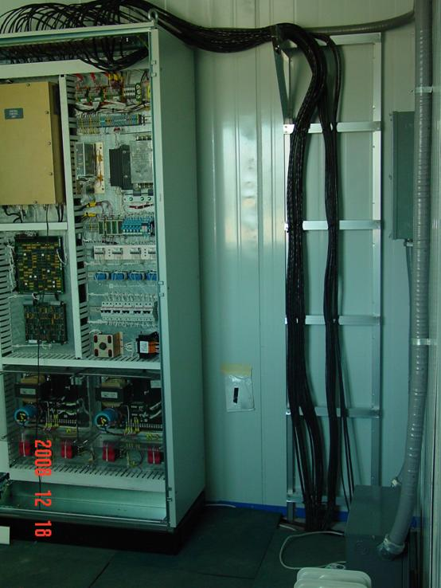
图片为更新后的新伺服系统功放房的图示